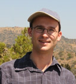
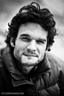

Postdoctoral researchers
Jabus Tyerman (postdoc 2009-2010) worked on the evolution of antibiotic resistance in bacterial biofilms
|  | James Rosindell (postdoc 2010-2011) is now at Imperial. James works on Hubbell's neutral theory and its applications in phylogenetics and island biogeography. |
|---|
| Joseph Brown (postdoc 2010-2012) is now a postdoc in Stephen Smith's lab at the University of Michigan. |
|---|
|  | Jon Eastman (postdoc 2009-2013) is now a professional bad-ass fireman. |
|---|